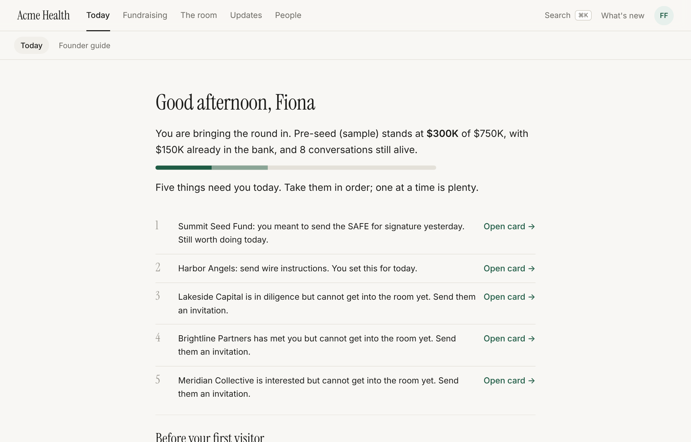
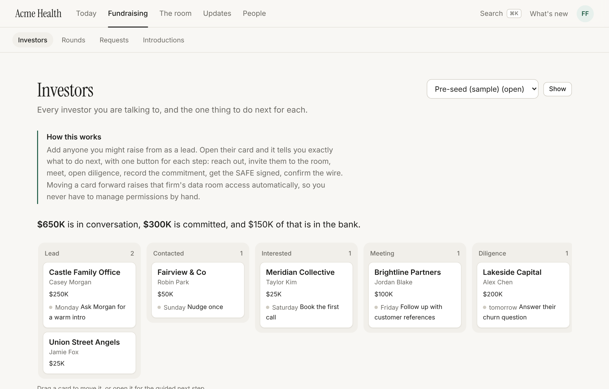
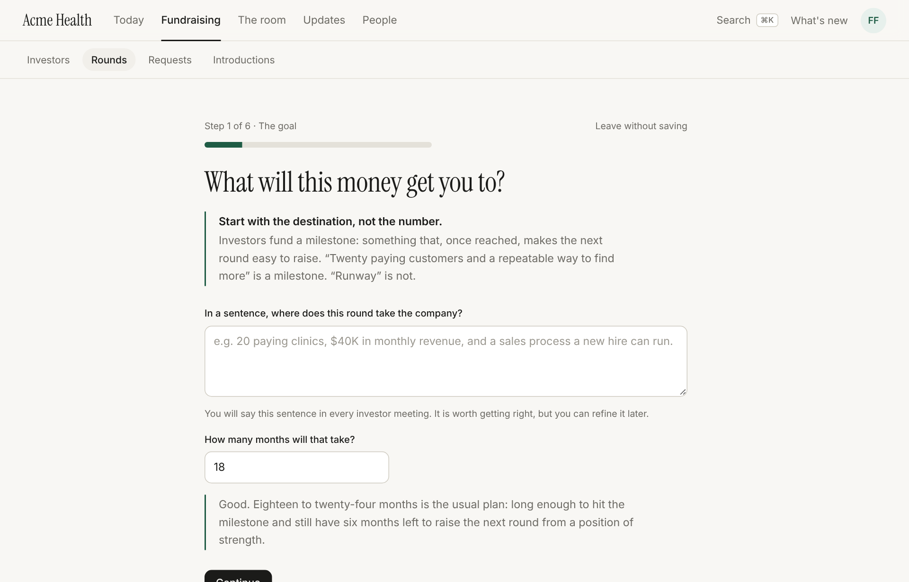
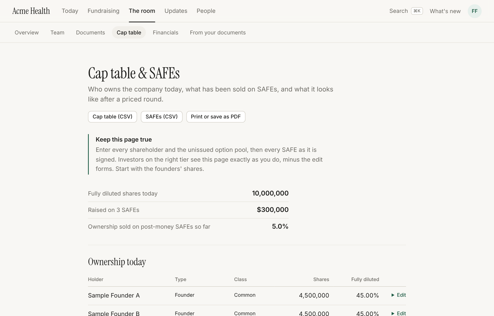
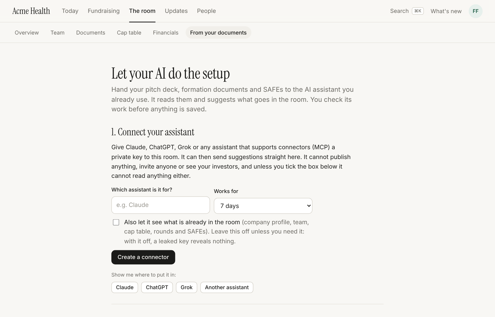
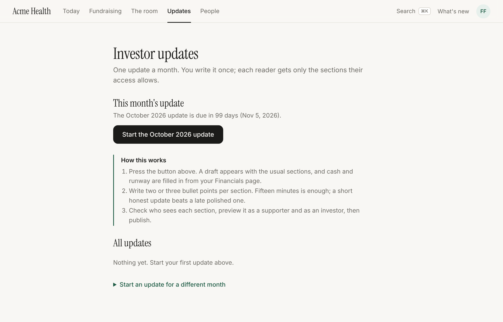

Free to use · Open source · Self-hosted
A room your investors can find their way around, and a fundraising workspace that tells you what to do next. It is free, and runs on your own server: one command to install, one file of data, no passwords.
curl -fsSL https://raw.githubusercontent.com/antistud/pretty-good-dataroom/main/install.sh | sudo bash -s -- room.example.com
A letter from you, what is in the room, and one question: what do you need, and by when? No checklists and no chasing. Monthly updates arrive by email, and anyone can ask for a document or offer an introduction.
A small CRM that walks each investor from first contact to wire, raises their access as the conversation gets serious, and nudges you when the monthly update is due. It explains what founders usually do at each step.
Every investor has a card, and every card has one next step: reach out, invite them, meet, open diligence, record the commitment, get the SAFE signed, confirm the wire.
Moving a card forward raises that firm's access to match, so you never manage permissions by hand.

The round planner asks what the money is for, then works out how much to raise and at what cap from your own numbers. At each step it says what founders usually do and why.

Shareholders, the option pool and SAFEs with caps, discounts and MFN, plus a view of what everyone owns after a priced round. Investors see only what their access level allows.
It is a planning aid. Have a lawyer confirm the real conversion.

Nobody enjoys retyping a cap table. Connect Claude, ChatGPT, Grok or any assistant that supports MCP, hand it your deck and formation documents, and it suggests what goes in the room. You tick what is right before anything is saved.
The app contains no AI and sends your files nowhere. How the connector works

Write one monthly update. Each section has its own audience, so supporters, early conversations and committed investors each see the right amount. Preview it as any reader, and see who read it.
Supporters who are not investors can follow along too, and every update carries the introductions you are looking for.

There is no paid plan, no seat limit and no trial. It is open source under the MIT licence, so you can use it, change it and keep it for as long as you like.
It is called pretty good on purpose. It is built for one company and its early rounds. It does not do e-signatures, it is not legal or tax advice, and a watermark cannot stop someone photographing a screen. When you outgrow it, your data is one file you can take with you.
curl -fsSL https://raw.githubusercontent.com/antistud/pretty-good-dataroom/main/install.sh | sudo bash -s -- room.example.comGet started DigitalOcean AWS, Google Cloud, Azure and others